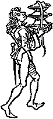

Click on detail from image or
use link for full version.
Click on detail from image or
use link for full version.
|
|
|
|
|
|
|
|
|
|
|
|
|
|
|
|
|
|
|
|
|
A Feast For The Eyes
Animals &
Agriculture
|
Brewing & Drinking | Dining
& Eating
Feasts & Feasting
| Foods & Foodstuffs | Hunting
&
Fishing
Kitchens,
Cooking,
& Equipment | Markets | A
Canterbury Calendar

A Boke of Gode Cookery A
Feast For The Eyes
A
Feast For The Eyes
© James
L. Matterer
For more medieval illustrations at Gode Cookery, please visit:
Fantastic Fish of the Middle Ages
| Medieval Macabre
Medieval Woodcuts Clipart
Collection
Mythical Plants of the Middle
Ages | Tales of the Middle Ages
| Tacuinum Sanitatis
Please visit The Gode Cookery Bookshop